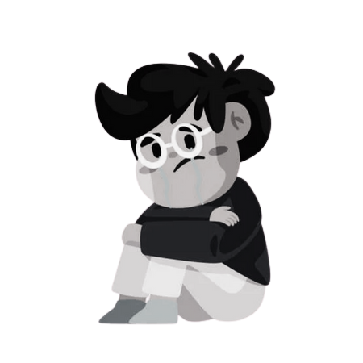

33 Kg fa...
Per quasi tutta la mia vita ho vissuto in sovrappreso.
In effetti, da piccolo ero non solo goloso, ma anche
pigro e sedentario.
Mi piaceva mangiare merendine e, durante le vacanze estive dai nonni, rinpilzarmi non di una,
ma di due
vaschette di gelato dopo robustissimi pranzi a base di pastasciutta, secondi con salse e chi più ne ha più
ne metta.
Ero sovrappreso e mi dicevo che, no, non sarei mai riuscito a diventare come gli altri ragazzi magri, esili
e in forma.
Quindi tanto valeva continuare così.
Non mi rendevo conto che tutto ciò mi stava portando a isolarmi, sempre di più, con i miei coetanei. 
Il problema è che ci si accorge degli errori commessi a fatti compiuti.
Così, per quanto amici e parenti, negli anni, insistevano nel farmi notare questo problema,
nella mia testa non
aveva alcuna importanza: stavo bene così.
Il cambiamento è avvenuto nel 2020, quando la mia relazione di 9 anni è giunta al termine,
e mi sono reso conto che
proprio il fatto di non aver dato alcuna importanza
alle mie condizioni fisiche aveva generato una serie di
altri problemi.
Avevo studiato all'università, ma senza un percorso lavorativo ben definito nella mia mente.
Ero insicuro e impacciato, a un'età in cui non potevo più permettermelo.
Tutto questo perché ero troppo compiacente verso me stesso.
Lo ero sempre stato, a partire dal mio rapporto
con il cibo e con il mio corpo.
Non mi ero mai impegnato per me stesso.
Così ho deciso che avrei provato a cambiare, a diventare migliore, a partire proprio da questo problema.